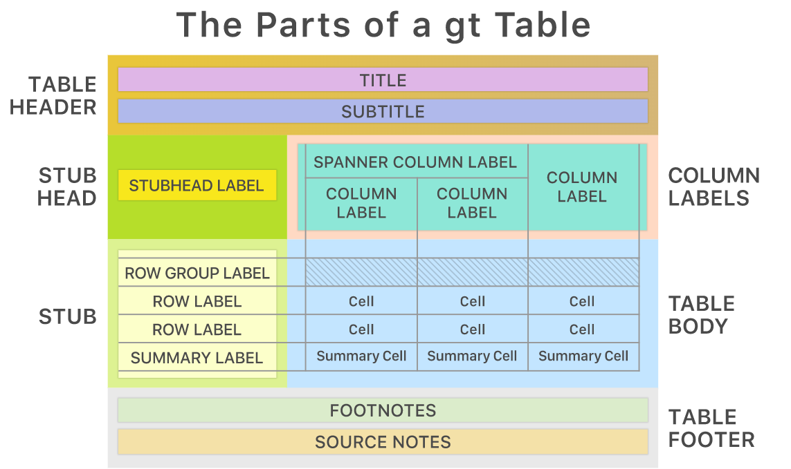

# this line specifies options for default options for all R Chunksknitr::opts_chunk$set(echo=T, highlight=T)# suppress scientific notationoptions(scipen=100,getSymbols.warning4.0 =FALSE)# install helper package (pacman), if neededif (!require("pacman")) install.packages("pacman", repos ="http://lib.stat.cmu.edu/R/CRAN/")
Loading required package: pacman
# install and load required packages# pacman should be first package in parentheses and then list otherspacman::p_load(pacman,tidyverse, knitr, gt, tidyquant)# verify packages (comment out in finished documents)p_loaded()
Colleague should be able to follow memo to update dashboard quickly and seamlessly when new data are available.
I (or TAs) will follow memo and verify that instructions are clear, links are functional, and I can update dashboard based on this memo. when new data are available.
Questions about Project and Templates?
R Markdown (.Rmd) and Quarto (.qmd) formats
RStudio is currently in transition
Documents can be rendered from R Markdown (.Rmd) or Quarto (.qmd)
HTML, Word documents, PDf
R Markdown will be available for forseeable future
Before this Spring, the best resource was Google which often leads to stack overflow
Stack Overflow is helpful but you have to know enough code to be able to understand answers.
Now, I recommend using and learning with AI such as Chat GPT (not during a test) The AI engine is very good at answering most code questions, but it is not perfect.
Download this document and save it for when you have to apply for jobs and answer questions about your skillset.
Other companies are quickly developing tutorial training too (some are good)
Sharing and Collaborating - GitHub vs. RPubs
Last week I introduced you to Rpubs which is ideal from sharing a dashboard.
Alternatively, you may have already come across GitHub in searching for files or a package.
Slides for this course are stored on GitHub
Required for files where data, code and text are maintained together as a project, referred to as a repository or repo.
Not required for finished dashboard.
GitHub is an online code sharing and code development platform.
Many R packages start as development code on GitHub and over time they are refined and published.
More about GitHub
Once you create free account, you can learn more about how it works in this tutorial.
Collaborative coding is common on GitHub but is a little more complex than working on a shared drive.
Developers of games, R packages, other software, etc., have huge code files and need to protect them.
There is a system in place (version control) where people can create a project with multiple code versions and edits. Over time a project develops more and more branches, like a tree, but the trunk.
Original code is preserved and changes can be incorporated as they are verified and approved.
Some GitHub links
Some tutorial links for collaborative coding on GitHub:
I will step out for 5 minutes today and again on Thursday.
Plan for Thursday (4/20)
Address submitted questions
Quarto and R Markdown
Tips for a Better Dashboard
Tables with GT
Five (more) minutes for evaluations
In-class work time
Tips for a Better Dashboard
A good rule for this project (every project):
Edit yourself
You may have a lot to say and show, BUT always consider:
What can you present WELL in the space an time you have?
An important skill to develop is the ability to filter the data to a representative subset, especially for a visualization.
Think about what data can be presented well and what the audience can digest.
Don’t try to show too much in any one plot or panel.
You can always show other parts of the data by
creating more panels
creating multi-plot grids to show other part of the data
Tips for a Better Dashboard
At each stage of the process, take a step back and examine each dashboard panel as if you are seeing it with fresh eyes.
As you do that, as yourself these questions:
Does this panel achieve a specific goal?
Is the point of this panel clear?
If not, how can I edit or augment this panel to clarify what it is showing?
Are the text and symbols readable from any distance?
What can I simplify to make it more clear?
Are there aspects I think are important that might not be obvious?
If so, how can I modify the panel or dashboard to highlight the key aspects?
When in doubt, ask someone like a roommate to look it and ask if they understand what you hope to convey.
Tables in Dashboards and Documents
This course focuses mostly on data visualizations, with a few table summaries.
Creating a more complex table, may be useful to you and could be included as an additional main panel in your dashboard instead of side panel.
Not required, but it may be helpful.
Even if you don’t use gt tables in your dashboard, they will definitely be helpful if you use R and RStudio to manage, analyze, and document data in the future.
If you have not already done so, please rerun the setup for this lecture, which now includes the gt package and the package.
The gt website has many examples with detailed step by step instructions.
Notes about examples on gt website:
Examples use the older pipe notation %>% which is identical in function to |>.
Examples also use different commands to complete the same data management tasks covered in BUA 455.
If you are unsure about a command you come across ask me, or google it. The R help index is also good.
e.g. ?glue or ?glue::glue is the glue command in glue package
Tables in Dashboards and Documents
First let’s look at what can be customized:

Example: Importing, Summarizing and Displaying Stock Data
snp9 <- GSPC |>fortify.zoo() |>as_tibble(.name_repair ="minimal") |>rename("date"="Index") |>mutate(mnth=month(date))|>group_by(mnth) |>filter(date==max(date)) |># filtered data to last day of each monthungroup() |>select(-c(6,8)) # remove volume and month variablesnames(snp9)[2:6] <-c("Open", "High", "Low", "Close", "Adjusted")head(snp9,3)
# A tibble: 3 × 6
date Open High Low Close Adjusted
<date> <dbl> <dbl> <dbl> <dbl> <dbl>
1 2022-07-29 4087. 4140. 4079. 4130. 4130.
2 2022-08-31 4001. 4015. 3955. 3955 3955
3 2022-09-30 3633. 3671. 3584. 3586. 3586.
Example: Importing, Summarizing and Displaying Stock Data
The code below does not make a new tibble or data frame
Instead it create a formatted table object that can be output as a .png file like a plot.
kable also creates a formatted table object, but gt has more features.
As with plots, I am saving this object and then displaying it on the next slide.
snp_fmt <- snp9 |>gt(rowname_col ="date") |>tab_header(title ="S&P 500",subtitle ="Last Trading Day of Previous Nine Months") |>tab_stubhead(label ="Date") |>fmt_date(columns=date, date_style=3) |># formats datefmt_currency(columns=Open:Adjusted, currency ="USD")|># formats values as US$tab_footnote("Data Source: https://finance.yahoo.com") |>tab_footnote("Symbol: ^GSPC")
In a dashboard or document, the code would be hidden, but it is shown here:
snp_fmt # code to display created table
S&P 500
Last Trading Day of Previous Nine Months
Date
Open
High
Low
Close
Adjusted
Fri, Jul 29, 2022
$4,087.33
$4,140.15
$4,079.22
$4,130.29
$4,130.29
Wed, Aug 31, 2022
$4,000.67
$4,015.37
$3,954.53
$3,955.00
$3,955.00
Fri, Sep 30, 2022
$3,633.48
$3,671.44
$3,584.13
$3,585.62
$3,585.62
Mon, Oct 31, 2022
$3,881.85
$3,893.73
$3,863.18
$3,871.98
$3,871.98
Wed, Nov 30, 2022
$3,957.18
$4,080.11
$3,938.58
$4,080.11
$4,080.11
Fri, Dec 30, 2022
$3,829.06
$3,839.85
$3,800.34
$3,839.50
$3,839.50
Tue, Jan 31, 2023
$4,020.85
$4,077.16
$4,020.44
$4,076.60
$4,076.60
Tue, Feb 28, 2023
$3,977.19
$3,997.50
$3,968.98
$3,970.15
$3,970.15
Fri, Mar 31, 2023
$4,056.18
$4,110.75
$4,056.18
$4,109.31
$4,109.31
Data Source: https://finance.yahoo.com
Symbol: ^GSPC
Editing a Table for a Presentation
A table in dashboard side panel should be small.
Previous table would not fit, but we can select variables and shorten the date.
Limit the table to key variables that highlight important characteristics of your data.
Other variables, e.g. Open, Low, can be shown in plot
snp_sm <- snp9 |>select(1,3,6) |>gt(rowname_col ="date") |>tab_header(title ="S&P 500",subtitle ="Last Trading Day of Previous Nine Months") |>tab_stubhead(label ="Date") |>fmt_date(columns=date, date_style=6) |>fmt_currency(columns=High:Adjusted, currency ="USD")|>tab_footnote("Source: https://finance.yahoo.com") |>tab_footnote("Symbol: ^GSPC")
S&P 500
Last Trading Day of Previous Nine Months
Date
High
Adjusted
Jul 29, 2022
$4,140.15
$4,130.29
Aug 31, 2022
$4,015.37
$3,955.00
Sep 30, 2022
$3,671.44
$3,585.62
Oct 31, 2022
$3,893.73
$3,871.98
Nov 30, 2022
$4,080.11
$4,080.11
Dec 30, 2022
$3,839.85
$3,839.50
Jan 31, 2023
$4,077.16
$4,076.60
Feb 28, 2023
$3,997.50
$3,970.15
Mar 31, 2023
$4,110.75
$4,109.31
Source: https://finance.yahoo.com
Symbol: ^GSPC
Project Questions
Group presentation days and times will be random assigned and posted by Sunday (4/23)
More material will be added here depending on questions submitted.
Otherwise, the rest of Thursday will be an in-class group project work day
Key Points from Week 13
Project Info - 2 Memos
Details, Templates, Examples provided
Taking advantage of RStudio
R Markdown and Quarto
Data mgmt. and reporting are seamless.
Can include R, Python, SQL etc.
Platforms for Projects
Github - essential for large projects
Rpubs is ideal for BUA 455
Posit Cloud, Google Colab, and Kaggle
Additional Material and links
Dashboard Tips
gt tables for
Many links for learning more**
Data Camp White Paper about Skillset
You may submit an ‘Engagement Question’ about each lecture until midnight on the day of the lecture. A minimum of four submissions are required during the semester.